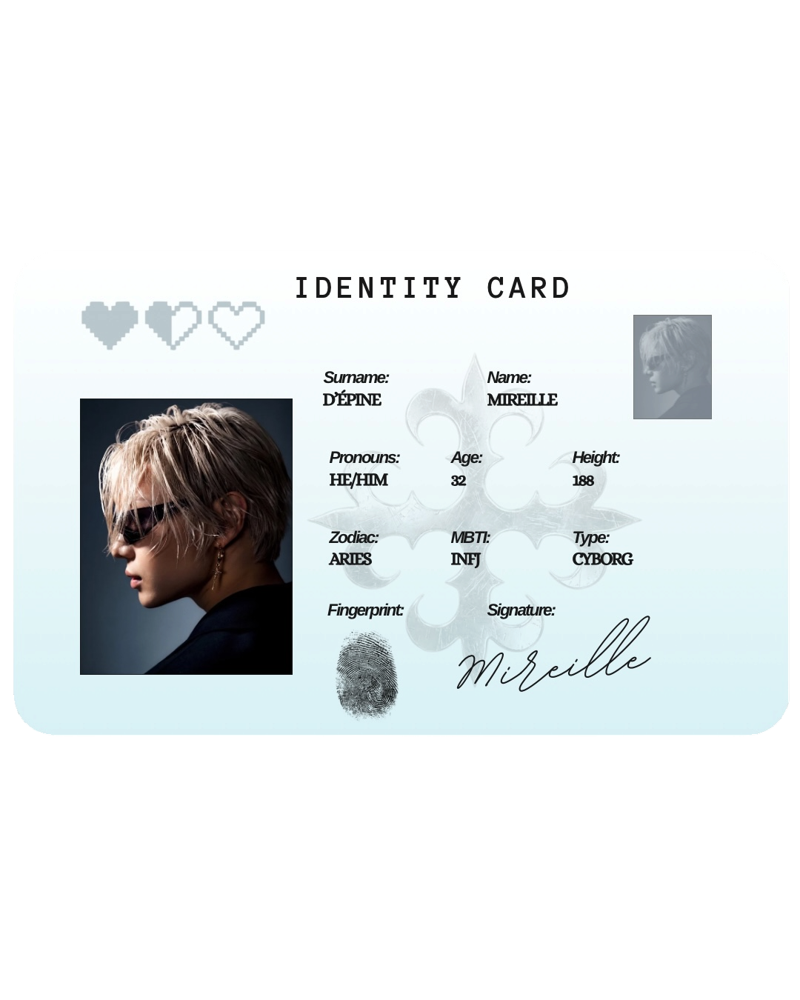

Identity
Who Are You?
Ballroom raised him. Mireille learned early how to work a room.
He is warm, affectionate, flirtatious, and rarely composed. Once he likes someone, he makes it known quickly. He enjoys people, long conversations, and finding out what makes them tick.
Do not mistake the flamboyance for a romantic advance. That is just who he is. He only turns cutthroat when the lights are on and the cameras are rolling. That is when the obsession shows. Offstage, he is quieter than he looks. An introvert with two cats and a long vanity ritual. The vivacious diva is something he puts on.
He has modified so much of himself that hiding would feel like a waste. He moves between hotels, moves through the world like a socialite, and deals in archival fashion. He sources rare garments, arranges private sales, and has a particular talent for finding buyers willing to pay considerably more than something is worth. His business is not always as legitimate as he makes it sound.
He likes beautiful things. He likes being seen.